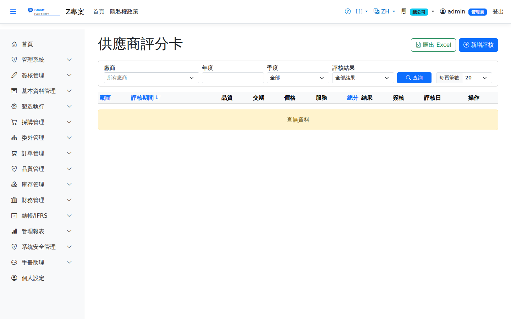

供應商評分卡Vendor Evaluation
路由：/VendorEvaluation | 合格供應商年度/季度評核（SRM）Route: /VendorEvaluation | Annual and quarterly evaluation of qualified suppliers (SRM)
對供應商進行年度或季度評核：品質、交期分數由系統自動計算，價格、服務分數人工填寫，總分依權重加權平均。評核核准後自動更新公司主檔的「供應商資格狀態」（合格／觀察期／暫停），採購與委外下單時據以警示。Evaluates suppliers annually or quarterly: quality and delivery scores are calculated by the system, price and service scores are entered manually, and the total is a weighted average. Approving an evaluation updates the supplier qualification status on the company master (Qualified / Under Watch / Suspended), which then warns buyers on purchase and outsource orders.

供應商評鑑畫面截圖（示意，實際欄位/資料依權限與查詢條件而異）Vendor evaluation screenshot (illustrative; actual fields and data vary by permission and query criteria)
分數口徑Scoring basis
1
品質分數Quality Score＝(1 − NCR 不良量 ÷ 過帳進貨量) × 100。不良量取 QCR 不合格品單（來源＝進貨單、非作廢）在期間內的數量加總，全公司跨廠彙總。期間內完全沒有進貨時算不出分數，畫面標示「期間無資料」，該構面排除在加權之外，不是給 100 分。 = (1 − NCR reject quantity ÷ posted receipt quantity) × 100. The reject quantity is the sum of QCR non-conformance reports (source = goods receipt, not voided) within the period, summed across all plants. With no receipts at all in the period the score cannot be computed: the screen shows "No data for period" and the dimension is excluded from the weighting rather than scored 100.
2
交期分數Delivery Score＝交期達成率 × 100，口徑與「供應商交期達成率」報表相同（採購進貨＋委外收貨雙來源，母體是預交日落在期間內的單）。期間內沒有應交的單時同樣算不出分數，標示「期間無資料」並排除在加權之外。 = on-time delivery rate × 100, on the same basis as the "Supplier Delivery Rate" report (both purchase and outsource, with the population being lines whose promised date falls in the period). With nothing due in the period the score again cannot be computed: it shows "No data for period" and is excluded from the weighting.
3
總分權重Score weights存於系統參數 srm_weight_quality／delivery／price／service（預設 30/30/20/20），可由系統管理員調整。 Stored in the system parameters srm_weight_quality / delivery / price / service (30/30/20/20 by default) and adjustable by the administrator.
「沒有資料」不等於「滿分」："No data" is not the same as "full marks":從未往來的廠商與零不良、全準時的廠商，過去會拿到一模一樣的分數，而後者才是該被加分的那一個。現在算不出來的構面會退出加權，權重在其餘構面之間重新分配；四個構面全都算不出來時總分為 0，而不是除以零。畫面、表單與列印三處都會標示「期間無資料」——列印本是對外文件，更不能讓佔位的分數看起來像評價。 A supplier you have never traded with and a supplier with zero defects and perfect delivery used to receive exactly the same score, although only the latter had earned it. A dimension that cannot be computed now drops out of the weighting, and its weight is redistributed across the rest; when none of the four can be computed the total is 0 rather than a division by zero. The list, the form and the printout all mark it "No data for period" — the printout goes to people outside the company, so a placeholder score must not be allowed to read as an assessment there.
建立與送簽Creating and submitting
1
「新增評核」選擇廠商與年度（季度留空＝年度評核），按「重新計算」帶入自動分數與計算依據，再填價格、服務分數；總分即時試算。Click "New Evaluation", pick the supplier and year (leave the quarter blank for an annual evaluation), click "Recalculate" to pull in the automatic scores and their basis, then enter the price and service scores; the total is calculated as you type.
2
總分 ≥ 80 合格、60–79 有條件合格、< 60 不合格；Total ≥ 80 Qualified, 60–79 Conditional, < 60 Failed; 不合格必須填寫改善措施A follow-up action is mandatory when the result is Failed。同一廠商同一期間僅能有一筆評核。. A supplier can have only one evaluation per period.
3
草稿送簽後依簽核範本跑流程（未設定範本＝直接核准）；核准時自動回寫資格狀態：合格→Qualified、有條件→Probation（觀察期）、不合格→Suspended（暫停，下單時紅色警示）。Once submitted, the draft follows the approval template (no template = approved immediately). Approval writes the qualification status back automatically: Qualified → Qualified, Conditional → Probation, Failed → Suspended (with a red warning when ordering).
趨勢與匯出Trend and export
1
查詢列選定單一廠商時，清單上方顯示歷年（含季度）核准評核的總分折線圖。When a single supplier is selected, a line chart of approved total scores over the years (including quarters) appears above the list.
2
清單可匯出 Excel；每筆評核可開啟「列印評分卡」以瀏覽器列印或另存 PDF。The list can be exported to Excel; each evaluation can be opened with "Print Scorecard" to print from the browser or save as PDF.
欄位說明Field reference
查詢條件Query criteria
| 條件Condition | 說明Guide |
|---|---|
| 廠商Supplier | 只看單一供應商的評核紀錄Shows the evaluation history of a single supplier |
| 年度 / 季度Year / Quarter | 依評核期間篩選Filters by evaluation period |
| 評核結果Result | 依評核結論篩選（合格／待改善／不合格等）Filters by evaluation result (Qualified / Needs Improvement / Failed …) |
評核欄位Evaluation fields
| 欄位Field | 說明Guide |
|---|---|
| 廠商Supplier | 必填Required 受評核的供應商Supplier being evaluated |
| 評核期間Period | 必填Required 評核所屬的年度與季度；同一廠商同一期間僅能有一筆（應用層唯一性檢查）Year and quarter the evaluation belongs to; only one per supplier and period is allowed (checked in the application layer) |
| 品質Quality | 品質面得分，來源包含 IQC 不良與 NCR 統計；期間無進貨時顯示「期間無資料」Quality score, derived from IQC rejects and NCR statistics; shows "No data for period" when there were no receipts |
| 交期Delivery | 交期面得分，取自供應商交期達成率的同一口徑；期間無應交的單時顯示「期間無資料」Delivery score, on the same basis as the supplier delivery rate report; shows "No data for period" when nothing was due |
| 價格Price | 價格面得分（價格競爭力、調價合理性）Price score (price competitiveness, reasonableness of price changes) |
| 服務Service | 服務面得分（配合度、問題回應速度）Service score (cooperation, speed of response to problems) |
| 總分Total | 加權後的總分，決定評核結果級距；標示「期間無資料」的構面不參與加權The weighted total, which determines the result band; dimensions marked "No data for period" do not take part in the weighting |
| 結果Result | 評核結論；核准後才回寫供應商的合格資格狀態Evaluation result; the supplier qualification status is written back only after approval |
| 簽核Approval | 線上簽核進度Approval progress |
| 評核日Eval Date | 評核作業執行日期Date the evaluation was carried out |
相關畫面Related screens
供應商交期達成率Supplier Delivery Rate、廠商單價目錄Vendor Price List、不合格品單（NCR）Non-Conformance Reports